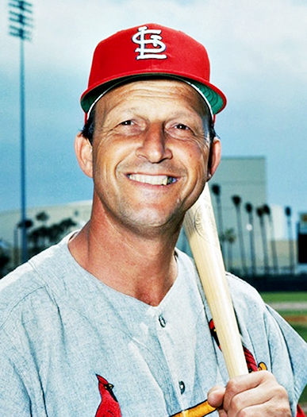
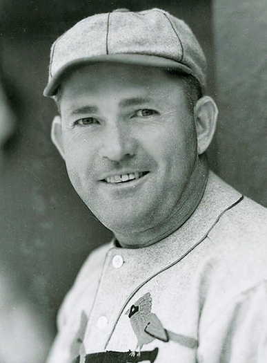
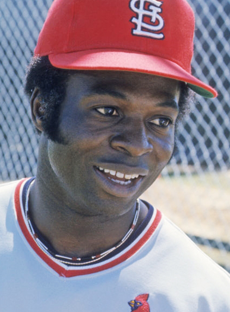
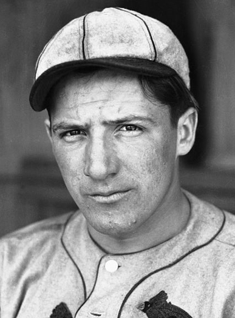
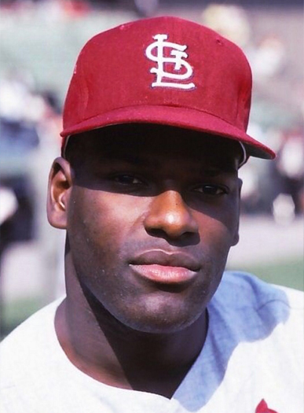
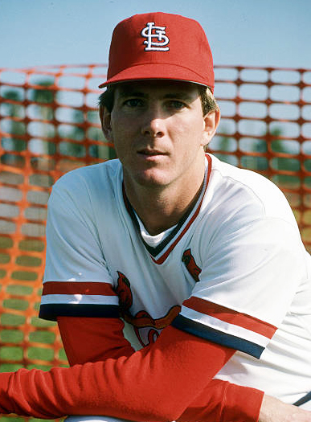
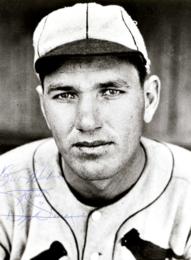
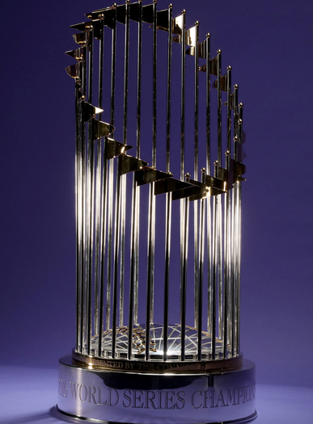
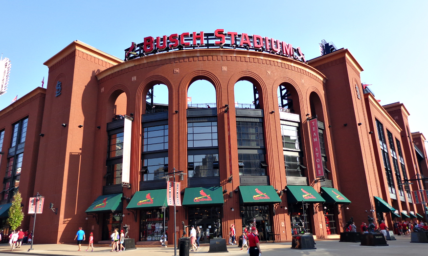

Frequently Asked Questions About The St. Louis Baseball Cardinals
1. Which Cardinal has the most career hits?


Stan "The Man" Musial is the Cardinal's career hit leader with 3630.

2. Which Cardinal has the most hits in a season?
Rodgers Hornsby had 250 hits in 1922.

3. Which Cardinal holds the records for stolen bases in a season and career?
Lou Brock stole 118 bases in 1974 and stole a total of 888 as a Cardinal.

4. Which Cardinal had the most RBIs in a single season?
Joe Medwick drove in 154 runs in 1937.

5. Which Cardinal pitcher has the most career wins?
Bob Gibson has 251 career wins.

6. Which Cardinal pitcher has the lowest career ERA?
John Tudor has a 2.52 career ERA.

7. Which Cardinal pitcher has the most wins in a season?
Dizzy Dean won 30 games in 1934.

8. Which Cardinal manager has the most career wins?
Tony La Russa won 1408 games.
9. How many world championships have the Cardinals won?
The Cardinals have won 11 World Series.

10. When did the new Busch Stadium open?
April 4, 2006.
